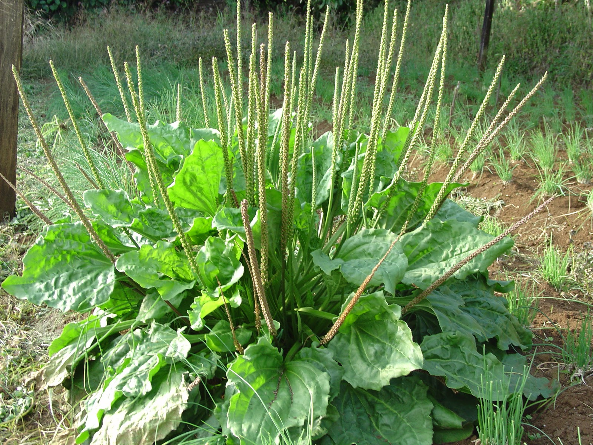

Ayuntamiento de Senés
JARDIN BOTANICO DE ESPECIES AUTOCTONAS DE SENES

Plantago major

El llantén mayor (Plantago major) es una planta herbácea perenne muy común en el ecosistema mediterráneo, especialmente en caminos, praderas y zonas con cierta humedad. Se caracteriza por su gran capacidad de adaptación y su resistencia al pisoteo, lo que le permite crecer en lugares frecuentados por el ser humano.
Presenta una roseta basal de hojas anchas, ovaladas y con nerviación muy marcada, que crecen a ras del suelo. Desde el centro de la planta emergen tallos florales largos y delgados que sostienen espigas con pequeñas flores de color verdoso, poco llamativas pero abundantes.
El llantén mayor se distribuye ampliamente por Europa, Asia y otras regiones templadas del mundo. Crece de forma espontánea en caminos, bordes de senderos, praderas y terrenos compactados, donde otras especies tienen más dificultad para desarrollarse.
El llantén mayor posee importantes propiedades medicinales, destacando sus efectos antiinflamatorios, cicatrizantes y expectorantes. Tradicionalmente se ha utilizado en infusiones y aplicaciones externas para tratar heridas, picaduras y afecciones respiratorias.
El llantén simboliza la resistencia y la capacidad de adaptación, al ser una planta que prospera en condiciones adversas y en lugares de tránsito constante. Representa la fortaleza de las especies silvestres frente al entorno.
En Senés, el llantén mayor tambien se denominaba "pelosilla" era un buen alimento para ovejas y cabras. En la cocina las hojas fresca la utilizaban para la preparación de sopas, menestras y ensaladas..
Para la salud se utilizaba como astringentes para la diarrea y disentería. Los cocimientos para colirios y lociones. Para la belleza las hojas tienen propiedades emolientes, descongestionantes e hidratantes.
El llantén mayor florece principalmente entre primavera y verano, produciendo espigas florales que liberan gran cantidad de semillas adaptadas a su dispersión.
Sus hojas presentan una nerviación muy característica que facilita su identificación. Además, ha sido considerada una de las plantas medicinales más antiguas utilizadas por el ser humano.